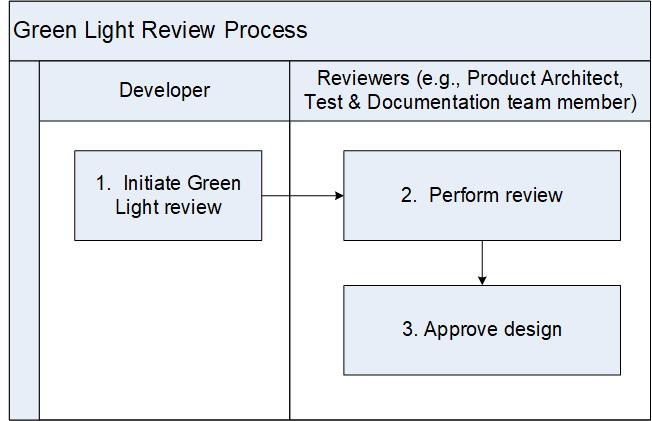

Design Green Light Review Process¶
This process describes the review and approval process for design documents (A.K.A HLDs). This process must be followed for all new designs, unless the Product Architects and Technical Feature Owner decides that a HLD is not required. This decision is recorded in the Stories managed in the Requirements Management System (e.g., Jira Agile) . The completion of the Design Green Light Review process indicates that a design is ready for implementation.
The Product Architect, Technical Feature Owner, and Developer is responsible for executing this process.
Entry Criteria |
A design is written and the Product Architect agrees it is ready for review and approval |
Inputs |
Design document, Design Standard (if applicable) |
Exit Criteria |
Design document is reviewed and approved. |
Outputs |
The following items are stored in the CM system:
|
Activities¶

Step # |
Activity Name |
Description |
|---|---|---|
1 |
Initiate Green Light review |
The Developer initiates the review in the Peer Review System (e.g., Code Collaborator). The minimal required reviewers are:
Product Management is an optional attendee. |
2 |
Perform review |
The review can happen through a meeting or the reviewers directly perform the review in the Peer Review System (e.g., Code Collaborator). The review comments are tracked in the Peer Review system(e.g., Code Collaborator). |
4 |
Approve design |
The author addresses the review comments and the Reviewers verify/approve the comments. If necessary, the review is repeated. The design (e.g., HLD) is approved when the review record is approved in the peer review system. |
{kind=link}
Change Log¶
Date |
Change Request ID |
Version |
Change By |
Description |
04/30/2020 |
N/A |
0.1 |
Shree Vidya Jayaraman |
Initial draft |
06/10/2020 |
N/A |
0.2 |
Shree Vidya Jayaraman |
Update based on Kitty’s feedback |